Contents
Loading The Data
clear;
warning('off','all')
warning
load('../data/hands2D.mat');
All warnings have the state 'off'.
(d) Visualizing The Data
numOfPointSets = size(shapes,3);
pointSets = shapes;
numOfPoints = size(shapes,2);
random_color = rand(numOfPointSets,3);
data_fig = figure;
for k = 1:numOfPointSets
cur_set = pointSets(:, :, k);
x = cur_set(1, :);
y = cur_set(2, :);
s = scatter(x, y, 'filled');
s.MarkerFaceColor = random_color(k,:);
hold on
end
hold off
save('./Q2/results/data_fig.mat', 'data_fig')
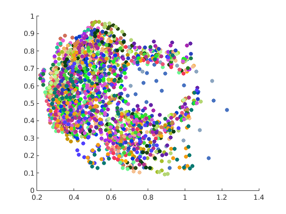
(e) Mean Shape
Using Code11
[mean_shape,aligned_pointsets] = Code11(pointSets);
mean_11_fig = figure;
for k = 1:numOfPointSets
scatter(aligned_pointsets(1,:,k),aligned_pointsets(2,:,k),'filled','blue');
hold on
end
plot(mean_shape(1,:),mean_shape(2,:),'-or','MarkerFaceColor','r');
hold off
title("Code11")
save('./Q2/results/mean_11_fig.mat','mean_11_fig');
Using Code22
[mean_shape,aligned_pointsets] = Code22(pointSets);
mean_22_fig = figure;
for k = 1:numOfPointSets
scatter(aligned_pointsets(1,:,k),aligned_pointsets(2,:,k),'filled','blue');
hold on
end
plot(mean_shape(1,:),mean_shape(2,:),'-or','MarkerFaceColor','r');
hold off
title("Code22")
save('./Q2/results/mean_22_fig.mat','mean_22_fig');
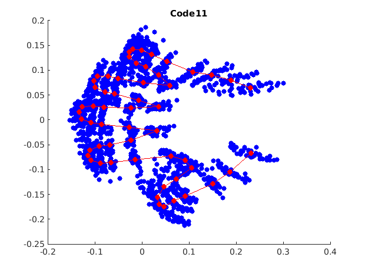 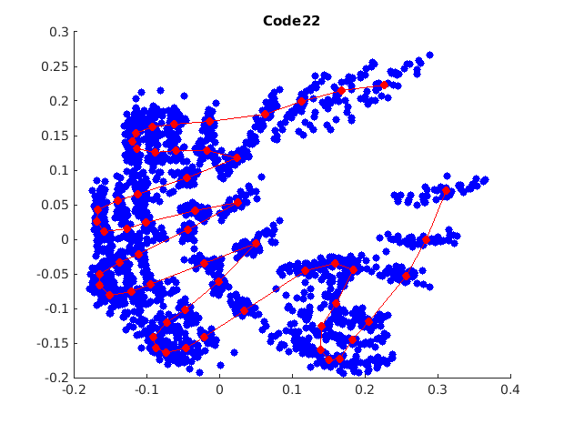
(f) Principal Modes of Variation
Using Code11
[mean_shape_11,aligned_pointsets_11] = Code11(pointSets);
[vec, val, mean_vec] = Variation_modes(mean_shape_11,aligned_pointsets_11);
vec_length = size(mean_shape_11, 2);
var_11_plus_3 = mean_vec + 3*sqrt(val(2*vec_length))*vec(:,2*vec_length);
var_11_plus_2 = mean_vec + 2*sqrt(val(2*vec_length))*vec(:,2*vec_length);
var_11x_plus_3 = zeros(vec_length, 1);
var_11y_plus_3 = zeros(vec_length, 1);
var_11x_plus_2 = zeros(vec_length, 1);
var_11y_plus_2 = zeros(vec_length, 1);
for i = 1:vec_length
var_11x_plus_3(i) = var_11_plus_3(2*i-1);
var_11y_plus_3(i) = var_11_plus_3(2*i);
var_11x_plus_2(i) = var_11_plus_2(2*i-1);
var_11y_plus_2(i) = var_11_plus_2(2*i);
end
var_11_minus_3 = mean_vec - 3*sqrt(val(2*vec_length))*vec(:,2*vec_length);
var_11_minus_2 = mean_vec - 2*sqrt(val(2*vec_length))*vec(:,2*vec_length);
var_11x_minus_3 = zeros(vec_length, 1);
var_11y_minus_3 = zeros(vec_length, 1);
var_11x_minus_2 = zeros(vec_length, 1);
var_11y_minus_2 = zeros(vec_length, 1);
for i = 1:vec_length
var_11x_minus_3(i) = var_11_minus_3(2*i-1);
var_11y_minus_3(i) = var_11_minus_3(2*i);
var_11x_minus_2(i) = var_11_minus_2(2*i-1);
var_11y_minus_2(i) = var_11_minus_2(2*i);
end
var_21_plus_3 = mean_vec + 3*sqrt(val(2*vec_length-1))*vec(:,2*vec_length-1);
var_21_plus_2 = mean_vec + 2*sqrt(val(2*vec_length-1))*vec(:,2*vec_length-1);
var_21x_plus_3 = zeros(vec_length, 1);
var_21y_plus_3 = zeros(vec_length, 1);
var_21x_plus_2 = zeros(vec_length, 1);
var_21y_plus_2 = zeros(vec_length, 1);
for i = 1:vec_length
var_21x_plus_3(i) = var_21_plus_3(2*i-1);
var_21y_plus_3(i) = var_21_plus_3(2*i);
var_21x_plus_2(i) = var_21_plus_2(2*i-1);
var_21y_plus_2(i) = var_21_plus_2(2*i);
end
var_21_minus_3 = mean_vec - 3*sqrt(val(2*vec_length-1))*vec(:,2*vec_length-1);
var_21_minus_2 = mean_vec - 2*sqrt(val(2*vec_length-1))*vec(:,2*vec_length-1);
var_21x_minus_3 = zeros(vec_length, 1);
var_21y_minus_3 = zeros(vec_length, 1);
var_21x_minus_2 = zeros(vec_length, 1);
var_21y_minus_2 = zeros(vec_length, 1);
for i = 1:vec_length
var_21x_minus_3(i) = var_21_minus_3(2*i-1);
var_21y_minus_3(i) = var_21_minus_3(2*i);
var_21x_minus_2(i) = var_21_minus_2(2*i-1);
var_21y_minus_2(i) = var_21_minus_2(2*i);
end
var_31_plus_3 = mean_vec + 3*sqrt(val(2*vec_length-2))*vec(:,2*vec_length-2);
var_31_plus_2 = mean_vec + 2*sqrt(val(2*vec_length-2))*vec(:,2*vec_length-2);
var_31x_plus_3 = zeros(vec_length, 1);
var_31y_plus_3 = zeros(vec_length, 1);
var_31x_plus_2 = zeros(vec_length, 1);
var_31y_plus_2 = zeros(vec_length, 1);
for i = 1:vec_length
var_31x_plus_3(i) = var_31_plus_3(2*i-1);
var_31y_plus_3(i) = var_31_plus_3(2*i);
var_31x_plus_2(i) = var_31_plus_2(2*i-1);
var_31y_plus_2(i) = var_31_plus_2(2*i);
end
var_31_minus_3 = mean_vec - 3*sqrt(val(2*vec_length-2))*vec(:,2*vec_length-2);
var_31_minus_2 = mean_vec - 2*sqrt(val(2*vec_length-2))*vec(:,2*vec_length-2);
var_31x_minus_3 = zeros(vec_length, 1);
var_31y_minus_3 = zeros(vec_length, 1);
var_31x_minus_2 = zeros(vec_length, 1);
var_31y_minus_2 = zeros(vec_length, 1);
for i = 1:vec_length
var_31x_minus_3(i) = var_31_minus_3(2*i-1);
var_31y_minus_3(i) = var_31_minus_3(2*i);
var_31x_minus_2(i) = var_31_minus_2(2*i-1);
var_31y_minus_2(i) = var_31_minus_2(2*i);
end
eigenvalues11 = [val(2*vec_length), val(2*vec_length-1), val(2*vec_length-2)];
eigenvalue11_fig = figure;
plot(eigenvalues11);
title("Code11: Principal eigenvalues");
xlabel("ith principal eigenvalue");
ylabel("eigenvalue");
Using Code22
[mean_shape_22,aligned_pointsets_22] = Code22(pointSets);
[vec, val, mean_vec] = Variation_modes(mean_shape_22,aligned_pointsets_22);
vec_length = size(mean_shape_22, 2);
var_12_plus_3 = mean_vec + 3*sqrt(val(2*vec_length))*vec(:,2*vec_length);
var_12_plus_2 = mean_vec + 2*sqrt(val(2*vec_length))*vec(:,2*vec_length);
var_12x_plus_3 = zeros(vec_length, 1);
var_12y_plus_3 = zeros(vec_length, 1);
var_12x_plus_2 = zeros(vec_length, 1);
var_12y_plus_2 = zeros(vec_length, 1);
for i = 1:vec_length
var_12x_plus_3(i) = var_12_plus_3(2*i-1);
var_12y_plus_3(i) = var_12_plus_3(2*i);
var_12x_plus_2(i) = var_12_plus_2(2*i-1);
var_12y_plus_2(i) = var_12_plus_2(2*i);
end
var_12_minus_3 = mean_vec - 3*sqrt(val(2*vec_length))*vec(:,2*vec_length);
var_12_minus_2 = mean_vec - 2*sqrt(val(2*vec_length))*vec(:,2*vec_length);
var_12x_minus_3 = zeros(vec_length, 1);
var_12y_minus_3 = zeros(vec_length, 1);
var_12x_minus_2 = zeros(vec_length, 1);
var_12y_minus_2 = zeros(vec_length, 1);
for i = 1:vec_length
var_12x_minus_3(i) = var_12_minus_3(2*i-1);
var_12y_minus_3(i) = var_12_minus_3(2*i);
var_12x_minus_2(i) = var_12_minus_2(2*i-1);
var_12y_minus_2(i) = var_12_minus_2(2*i);
end
var_22_plus_3 = mean_vec + 3*sqrt(val(2*vec_length-1))*vec(:,2*vec_length-1);
var_22_plus_2 = mean_vec + 2*sqrt(val(2*vec_length-1))*vec(:,2*vec_length-1);
var_22x_plus_3 = zeros(vec_length, 1);
var_22y_plus_3 = zeros(vec_length, 1);
var_22x_plus_2 = zeros(vec_length, 1);
var_22y_plus_2 = zeros(vec_length, 1);
for i = 1:vec_length
var_22x_plus_3(i) = var_22_plus_3(2*i-1);
var_22y_plus_3(i) = var_22_plus_3(2*i);
var_22x_plus_2(i) = var_22_plus_2(2*i-1);
var_22y_plus_2(i) = var_22_plus_2(2*i);
end
var_22_minus_3 = mean_vec - 3*sqrt(val(2*vec_length-1))*vec(:,2*vec_length-1);
var_22_minus_2 = mean_vec - 2*sqrt(val(2*vec_length-1))*vec(:,2*vec_length-1);
var_22x_minus_3 = zeros(vec_length, 1);
var_22y_minus_3 = zeros(vec_length, 1);
var_22x_minus_2 = zeros(vec_length, 1);
var_22y_minus_2 = zeros(vec_length, 1);
for i = 1:vec_length
var_22x_minus_3(i) = var_22_minus_3(2*i-1);
var_22y_minus_3(i) = var_22_minus_3(2*i);
var_22x_minus_2(i) = var_22_minus_2(2*i-1);
var_22y_minus_2(i) = var_22_minus_2(2*i);
end
var_32_plus_3 = mean_vec + 3*sqrt(val(2*vec_length-2))*vec(:,2*vec_length-2);
var_32_plus_2 = mean_vec + 2*sqrt(val(2*vec_length-2))*vec(:,2*vec_length-2);
var_32x_plus_3 = zeros(vec_length, 1);
var_32y_plus_3 = zeros(vec_length, 1);
var_32x_plus_2 = zeros(vec_length, 1);
var_32y_plus_2 = zeros(vec_length, 1);
for i = 1:vec_length
var_32x_plus_3(i) = var_32_plus_3(2*i-1);
var_32y_plus_3(i) = var_32_plus_3(2*i);
var_32x_plus_2(i) = var_32_plus_2(2*i-1);
var_32y_plus_2(i) = var_32_plus_2(2*i);
end
var_32_minus_3 = mean_vec - 3*sqrt(val(2*vec_length-2))*vec(:,2*vec_length-2);
var_32_minus_2 = mean_vec - 2*sqrt(val(2*vec_length-2))*vec(:,2*vec_length-2);
var_32x_minus_3 = zeros(vec_length, 1);
var_32y_minus_3 = zeros(vec_length, 1);
var_32x_minus_2 = zeros(vec_length, 1);
var_32y_minus_2 = zeros(vec_length, 1);
for i = 1:vec_length
var_32x_minus_3(i) = var_32_minus_3(2*i-1);
var_32y_minus_3(i) = var_32_minus_3(2*i);
var_32x_minus_2(i) = var_32_minus_2(2*i-1);
var_32y_minus_2(i) = var_32_minus_2(2*i);
end
eigenvalues22 = [val(2*vec_length), val(2*vec_length-1), val(2*vec_length-2)];
eigenvalue22_fig = figure;
plot(eigenvalues22);
title("Code22: Principal eigenvalues");
xlabel("ith principal eigenvalue");
ylabel("eigenvalue");
save('./Q2/results/eigenvalues11.mat',"eigenvalues11");
save('./Q2/results/eigenvalues22.mat',"eigenvalues22");
save('./Q2/results/eigenvalue11_fig.mat', 'eigenvalue11_fig')
save('./Q2/results/eigenvalue22_fig.mat', 'eigenvalue22_fig')
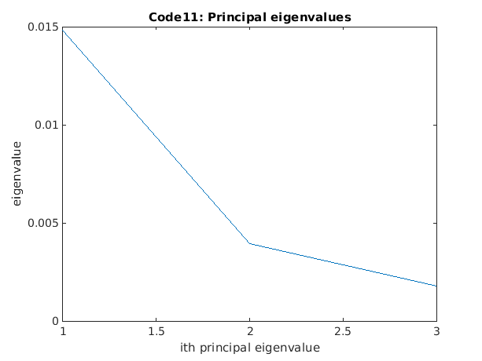 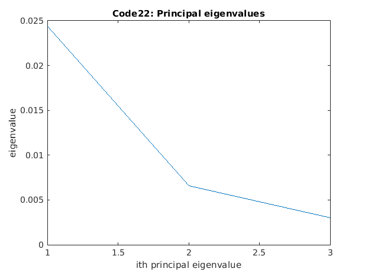
(g) Plots of Aligned Pointsets, Means & Principal Means of Variation
Code 1 Results
Code11_sd1 = figure;
subplot(2,2,1)
for k = 1:numOfPointSets
scatter(aligned_pointsets_11(1,:,k),aligned_pointsets_11(2,:,k),'filled','blue');
hold on
end
title("Code11: Aligned pointsets")
subplot(2,2,2)
plot(mean_shape_11(1,:),mean_shape_11(2,:),'-or','MarkerFaceColor','r');
hold on
title("Code11: Mean shape")
subplot(2,2,3)
plot(var_11x_plus_3,var_11y_plus_3,'-or','MarkerFaceColor','g');
hold on
title("Code11: +3SD1")
subplot(2,2,4)
plot(var_11x_minus_3,var_11y_minus_3,'-or','MarkerFaceColor','g');
hold on
hold on
title("Code11: -3SD1")
Code11_sd2 = figure;
subplot(2,2,1)
for k = 1:numOfPointSets
scatter(aligned_pointsets_11(1,:,k),aligned_pointsets_11(2,:,k),'filled','blue');
hold on
end
title("Code11: Aligned pointsets")
subplot(2,2,2)
plot(mean_shape_11(1,:),mean_shape_11(2,:),'-or','MarkerFaceColor','r');
title("Code11: Mean shape")
hold on
subplot(2,2,3)
plot(var_21x_plus_3,var_21y_plus_3,'-or','MarkerFaceColor','g');
title("Code11: +3SD2")
hold on
subplot(2,2,4)
plot(var_21x_minus_3,var_21y_minus_3,'-or','MarkerFaceColor','g');
title("Code11: -3SD2")
hold on
hold on
Code11_sd3 = figure;
subplot(2,2,1)
for k = 1:numOfPointSets
scatter(aligned_pointsets_11(1,:,k),aligned_pointsets_11(2,:,k),'filled','blue');
hold on
end
title("Code11: Aligned pointsets")
subplot(2,2,2)
plot(mean_shape_11(1,:),mean_shape_11(2,:),'-or','MarkerFaceColor','r');
title("Code11: Mean shape")
hold on
subplot(2,2,3)
plot(var_31x_plus_3,var_31y_plus_3,'-or','MarkerFaceColor','g');
title("Code11: +3SD3")
hold on
subplot(2,2,4)
plot(var_31x_minus_3,var_31y_minus_3,'-or','MarkerFaceColor','g');
title("Code11: -3SD3")
hold on
hold on
Code 2 Results
Code22_sd1 = figure;
subplot(2,2,1)
for k = 1:numOfPointSets
scatter(aligned_pointsets_22(1,:,k),aligned_pointsets_22(2,:,k),'filled','blue');
hold on
end
title("Code22: Aligned pointsets")
subplot(2,2,2)
plot(mean_shape_22(1,:),mean_shape_22(2,:),'-or','MarkerFaceColor','r');
title("Code22: Mean shape")
hold on
subplot(2,2,3)
plot(var_12x_plus_3,var_12y_plus_3,'-or','MarkerFaceColor','g');
title("Code22: +3SD1")
hold on
subplot(2,2,4)
plot(var_12x_minus_3,var_12y_minus_3,'-or','MarkerFaceColor','g');
title("Code22: -3SD1")
hold on
hold on
Code22_sd2 = figure;
subplot(2,2,1)
for k = 1:numOfPointSets
scatter(aligned_pointsets_22(1,:,k),aligned_pointsets_22(2,:,k),'filled','blue');
hold on
end
title("Code22: Aligned pointsets")
subplot(2,2,2)
plot(mean_shape_22(1,:),mean_shape_22(2,:),'-or','MarkerFaceColor','r');
title("Code22: Mean shape")
hold on
subplot(2,2,3)
plot(var_22x_plus_3,var_22y_plus_3,'-or','MarkerFaceColor','g');
title("Code22: +3SD2")
hold on
subplot(2,2,4)
plot(var_22x_minus_3,var_22y_minus_3,'-or','MarkerFaceColor','g');
title("Code22: -SD2")
hold on
hold on
Code22_sd3 = figure;
subplot(2,2,1)
for k = 1:numOfPointSets
scatter(aligned_pointsets_22(1,:,k),aligned_pointsets_22(2,:,k),'filled','blue');
hold on
end
title("Code22: Aligned pointsets")
subplot(2,2,2)
plot(mean_shape_22(1,:),mean_shape_22(2,:),'-or','MarkerFaceColor','r');
title("Code22: Mean shape")
hold on
subplot(2,2,3)
plot(var_32x_plus_3,var_32y_plus_3,'-or','MarkerFaceColor','g');
title("Code22: +3SD3")
hold on
subplot(2,2,4)
plot(var_32x_minus_3,var_32y_minus_3,'-or','MarkerFaceColor','g');
title("Code22: -3SD3")
hold on
hold on
var_11_plus_3 = [var_11x_plus_3;var_11y_plus_3];
var_21_plus_3 = [var_21x_plus_3;var_21y_plus_3];
var_31_plus_3 = [var_31x_plus_3;var_31y_plus_3];
var_11_minus_3 = [var_11x_minus_3;var_11y_minus_3];
var_21_minus_3 = [var_21x_minus_3;var_21y_minus_3];
var_31_minus_3 = [var_31x_minus_3;var_31y_minus_3];
var_12_plus_3 = [var_12x_plus_3;var_11y_plus_3];
var_22_plus_3 = [var_22x_plus_3;var_21y_plus_3];
var_32_plus_3 = [var_32x_plus_3;var_31y_plus_3];
var_12_minus_3 = [var_12x_minus_3;var_11y_minus_3];
var_22_minus_3 = [var_22x_minus_3;var_21y_minus_3];
var_32_minus_3 = [var_32x_minus_3;var_31y_minus_3];
save('./Q2/results/aligned_pointsets11.mat',"aligned_pointsets_11");
save('./Q2/results/aligned_pointsets22.mat',"aligned_pointsets_22");
save('./Q2/results/mean_shape_11.mat',"mean_shape_11");
save('./Q2/results/mean_shape_22.mat',"mean_shape_22");
save('./Q2/results/var_11_plus_3.mat',"var_11_plus_3");
save('./Q2/results/var_21_plus_3.mat',"var_21_plus_3");
save('./Q2/results/var_31_plus_3.mat',"var_31_plus_3");
save('./Q2/results/var_11_minus_3.mat',"var_11_minus_3");
save('./Q2/results/var_21_minus_3.mat',"var_21_minus_3");
save('./Q2/results/var_31_minus_3.mat',"var_31_minus_3");
save('./Q2/results/var_12_plus_3.mat',"var_12_plus_3");
save('./Q2/results/var_22_plus_3.mat',"var_22_plus_3");
save('./Q2/results/var_32_plus_3.mat',"var_32_plus_3");
save('./Q2/results/var_12_minus_3.mat',"var_12_minus_3");
save('./Q2/results/var_22_minus_3.mat',"var_22_minus_3");
save('./Q2/results/var_32_minus_3.mat',"var_32_minus_3");
save('./Q2/results/Code11_sd1.mat', 'Code11_sd1')
save('./Q2/results/Code11_sd2.mat', 'Code11_sd2')
save('./Q2/results/Code11_sd3.mat', 'Code11_sd3')
save('./Q2/results/Code22_sd1.mat', 'Code22_sd1')
save('./Q2/results/Code22_sd2.mat', 'Code22_sd2')
save('./Q2/results/Code22_sd3.mat', 'Code22_sd3')
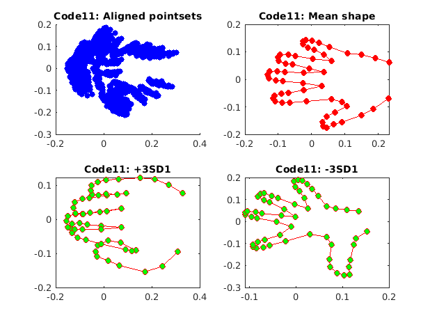 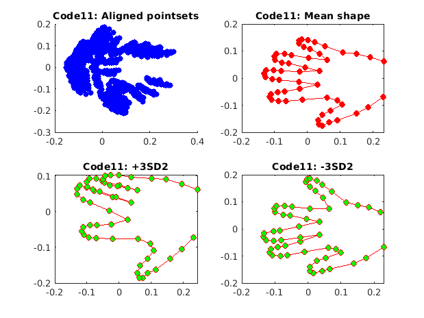 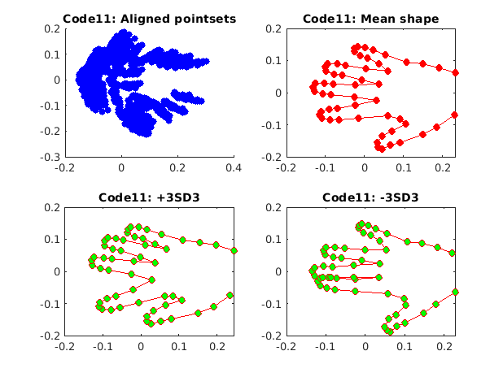 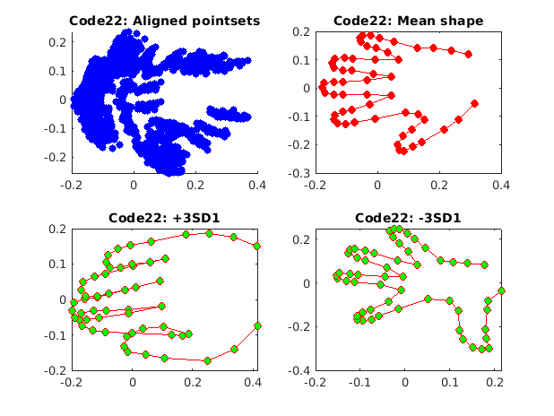 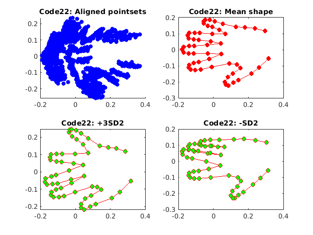 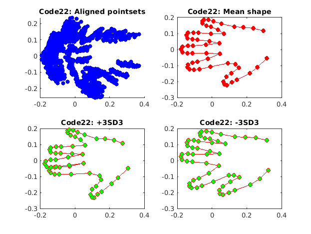